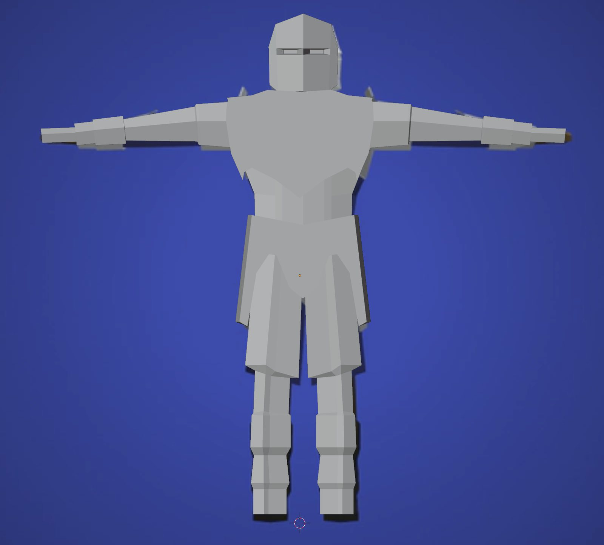
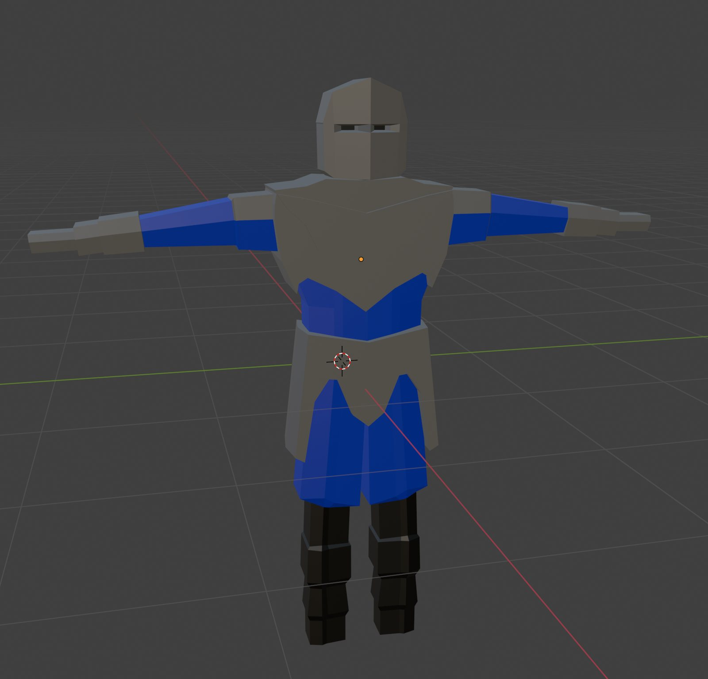
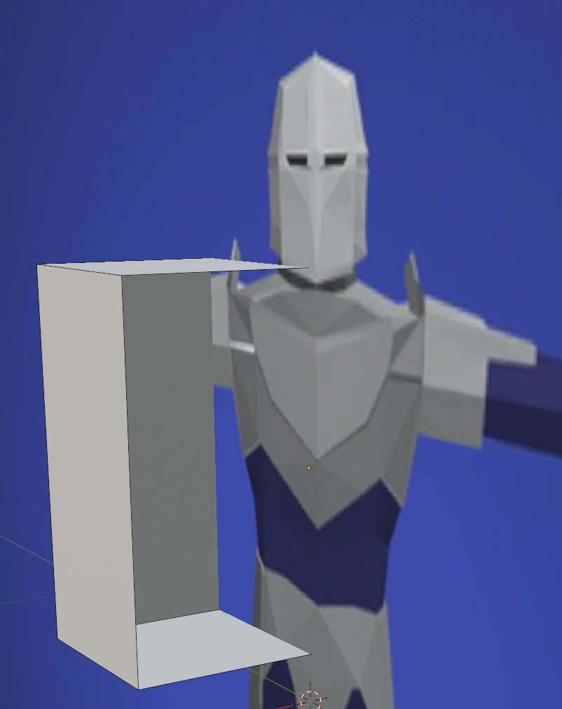
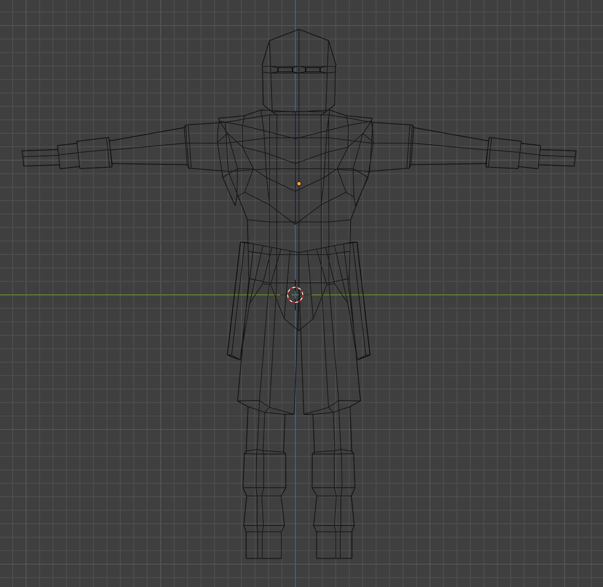

Knight — my first 3D model
A low-poly knight built from a cube: block-out, loop cuts and extrusions, then textured and dropped into Unity.
BlenderUnity
Vertices, edges, faces
A 3D model is built from vertices connected by edges, with faces filling the surface. Loop cuts slice the shape where you need more detail and extrusions pull new geometry out of an existing face. From a cube you can make almost anything if you know the tools well enough.
Texturing
Texturing is like drawing on paper with several layers on top of each other. The base colour map gives the colour, the metallic map adds shine so it reflects like real life, and normal maps fake bumps and dents that catch the light without adding geometry.
Pictures



